MAS Health and Predict Overview Task Guide
This task guide is based on the MAS v8.11 early program environment. Please follow the steps in this task guide. Any deviation from the task guide and or changes you make to the system will also appear and may impact other users. Since this is a live system, some changes are inevitable, and you may find that some of the details of the task guide do not match the system.
For this overview, the following are required, and have been created by your instructor.
| Capability | Data Required |
|---|---|
| Group (with scores) | EUORG1_EUDEMO_ST_A |
| Group (with scores) | ST_EFFICIENCY |
| Score Type | Substation Efficiency |
| Custom Matrix | Efficiency and Health |
| Investment Project | ST Investment Project |
| Plan Template | SUBSTATION_TRANSFORMER |
If your instructor hasn't added the data, ask him to follow the steps in Build MAS Health and Predict Demonstration
Introduction
In this demonstration you will be a reliability engineer. Your role is to maintain the reliability of the grid. Your major responsibility is to ensure that the grid stays up and operational. You are also responsible for making short, medium and long term investment decisions that drive maintenance and replacement policies. You use asset condition and operational data to gain insights into Asset Health, Probability of Failure and Risk, both today and into the future.
Thankfully you have a Health and Predict solution from IBM with advanced analytics that help you work efficiently and
confidently without relying on spreadsheets or point solutions that consider 1 or 2 data sources. Health and Predict
incorporates multiple data sources such as Asset Master data from Manage, Work order data, historical failure data, GeoSpatial Data,
Inspection and Test Logs, IoT and Sensor data. Health and Predict provides a flexible asset condition framework for
mining the asset condition data. Health and Predict helps you identify assets that are at greatest risk of failure,
across different circuits/feeders, substations and regions. The risk assessment helps you drive asset and work management
activities in Maximo Manage or other EAM systems to keep the grid up, reduce operational expense, optimize and defend
capital expenditures resulting in better outcomes.
Maximo Health and Predict are applications in Maximo Application Suite (MAS) that are targeted to the reliability engineer, and provide a view of the current state and future state of an enterprise's assets. IBM Maximo Models for Electrical Distribution is an accelerator that extends Health and Predict designed for understanding the condition of electrical distribution asset classes used by the utilities industry.
Identify
On the “Applications” tab, there are tiles for each of the applications that the admin has loaded from the Maximo Application Suite (MAS). On the “Industry Solution” tab, there is a tile for Health and Predict – Utilities.
Value
Health and Predict arm you the reliability engineer with AI-powered insights to take actions to extend the life of the Utility’s assets, reduce maintenance costs, and eliminate unplanned downtime.
Actions
Follow the action items below.
-
From the main MAS page, select the
Applicationstab
-
Click the
LaunchlinkHealthtile. -
The
Asset Table Viewis displayed with the default query of all assets.
Asset Table View
On the main screen, there is a table view of all managed assets in a familiar table view. From this page you can quickly choose the asset query that reflects the assets you are responsible for. You can filter those assets to quickly identify the assets that have poor scores by sorting the assets or by searching for assets using key words so that you can get the latest asset details on an individual asset.
Value
This is particularly valuable because it shows you a mix of both IT data (from Manage) and OT data (from Monitor) together in a single view.
This asset data is coming from Maximo Manage, but MAS can connect to other EAM systems with or App Connect, via API or using Monitor Connectors.
Different views of the data can be generated to make it easier to identify critical assets. On this grid, you can add and move columns, filter, search and sort.
Actions
Follow the action items below.
-
Select the
hamburgericon above to the magnifying glass to show the left navigation menus. This shows how you can navigate to other perspectives likelocationsto understand location health. There are other menu options to setup health scores, asset investment analysis or and prediction capabilities. 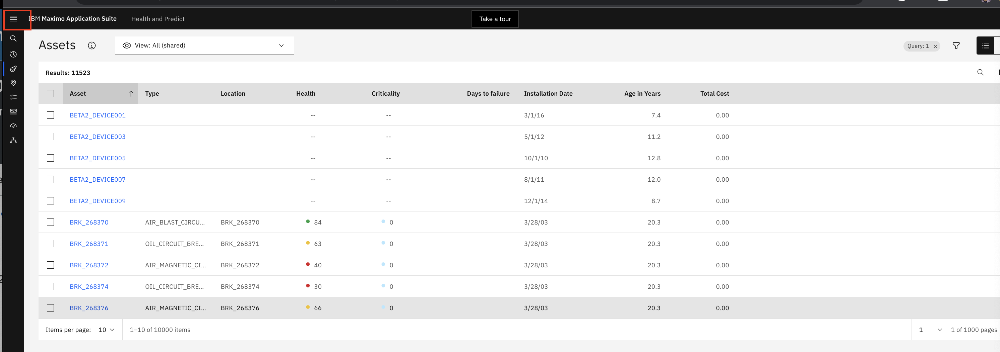 -
Click
hamburgermenu icon again to close the menu slider.
There’s an option to create private views, and public views which are available to everyone. 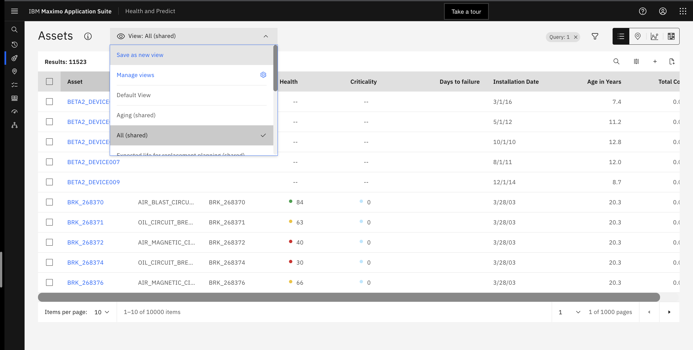
Value
Saved views allow the you to return to a particular view so that they don’t have to start over every time. This view filters on my Substation Transformers.
Actions
Use the selection box to show your saved view.
- Click the selection box to show the saved views then click on the
Substation Transformersview. 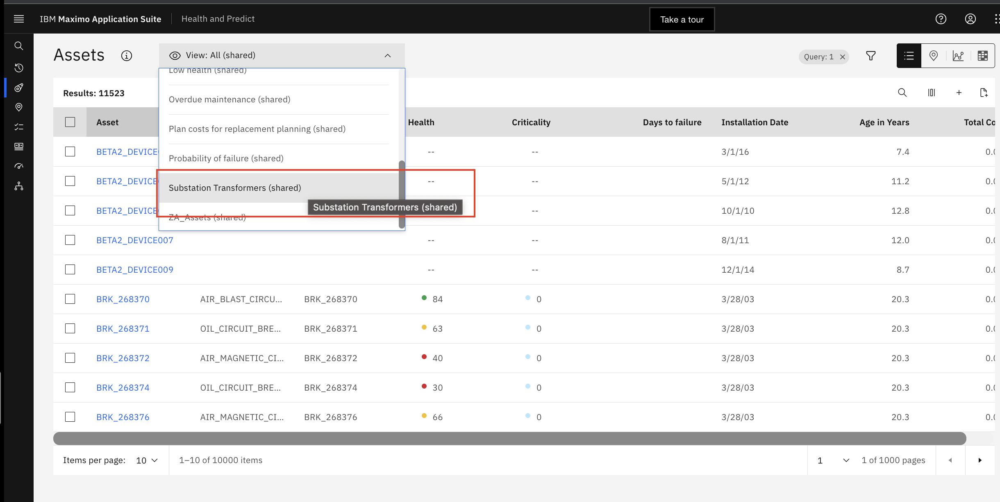
In the Table view, there are columns with calculated data. There are Health scores, which are created for groups of assets
from the Scoring setting menu. These specify the group that scores are calculated on. The query the notebook to use and
how frequently the score should be calculated.
Value
You don't have to spend time creating your own templates but can use the included notebook templates with predefined industry standard formulas to calculate health, criticality, risk, end of life and effective age scores for assets.
Actions
Follow the actions below
- You can display the data in the Table view that is most important to you. Use the selection box to choose which asset
data columns to display in your table.

- The
Days to Failurecolumn comes from a predictive model defined and scheduled in thePredict settingtab. 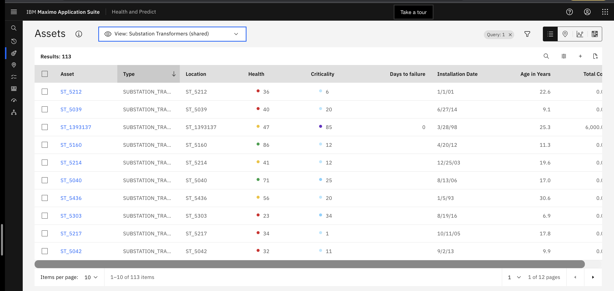
The IBM Maximo Models for Electrical Distribution includes the following model templates:
-
Substation Transformers / Substation Power (IBM Transformers Tap Changers)
-
Circuit Breaker
-
Air Blast Circuit Breaker (IBM Circuit Breakers Air Blast)
-
Air Magnetic Circuit Breaker
-
Circuit Breaker
-
Oil Circuit Breaker (IBM Circuit Breakers Oil)
-
SF6 Circuit Breaker
-
Vacuum Circuit Breaker
-
-
Distribution Transformers (IBM Transformers Tap Changers)
-
Overheads (multiple)
-
Undergrounds (multiple)
-
-
Instrument Transformers
-
Dry Current Transformer
-
Oil Filled Capacitive Voltage Transformer
-
Oil Filled Current Transformer (IBM Instrument Oil Filled CTs)
-
Oil Filled Voltage Transformer
-
SF6 Filled Current Transformer
-
-
Switch gear / Gas Insulated Switch gear (IBM Gas Insulated Switchgear)
Map View
Another view to help identify assets in trouble is the map view. Using a map view focused to a container is a good way to understand the capabilities and benefits of the Map view. Containers enable to you reflect the geolocation of your assets and geo fencing of business areas. It could be a region, town, service subscriber area you are responsible for servicing.
We’ll look at a region that contains a mixture of transformers, circuit breakers, cables (OTWs), and switches. Select a group of assets, or a container, that contains a mixture of transformers, circuit breakers, cables (OTWs), and switches.
Value
Seeing how assets are spatially distributed may assist with identifying and investigating assets at risk. This is especially true in the utilities industry that have geo location dependencies on interconnectivity, weather or area of responsibility.
Actions
Follow the action items below.
- You filter the group of assets you want to focus on. Reset the
Viewto showAll sharedassets. Reference the early instructions if you forgot how to do this. 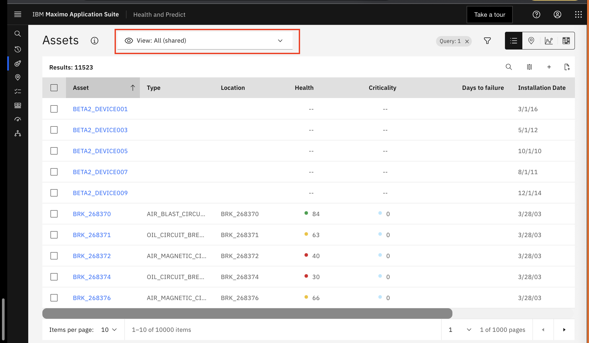 - Click the
filtericon that looks like a funnel.
- Select the
pencilsymbol for containers
- Select
NIXON9098 - Click
OK
- Click
Apply

You can see there are 261 assets in this container. When we sort by the health score from low to high, we find there are
many assets with Health scores in poor health and many of them have a Criticality score of 0. This is concerning. Several column headers can be used to sort to help visualize the data in different ways. Sort by most critical assets
and with the worst health.
Value
Be able to quickly focus on the assets you are responsible for and in need of action.
Actions
Follow the action items below.
-
On the
Assets Tableview, clickHealthcolumn title to sort assets by theHealthscore.

-
Asset
Criticalitycan be measured by understanding the importance an asset has to the grid performing it's job of providing electricity to customers. AssetEnd of Lifeis important to know so that assets can be planned to be replaced before they reach their end of life. On theAssets Tableview, clickCriticalitycolumn title to sort assets by theCriticalityscore.
You need to understand the relative position of the assets with the worst health and most critical in reference to the service are you are responsible for.
Value
Maps provide a way to understand an asset condition scores relative to position, connectivity and condition of the impacted service areas using Containers.
Actions
Follow the action items below.
- Click
Mapbutton. Selecting thepinicon in the upper right of the screen shows the selected assets on a map view. The differentpincolors and icons represents the health of the assets, according to the legend at the bottom left of the screen. This is a quick way to understand which assets are in poor health.

-
Adjust the map using the controls and mouse. You can expand a two finger pinch press on the touch pad to zoom in.
To move the map push one finger and move with the other finger on the touch pad

-
By turning on the
Containerselection, a polygon will appear around the assets in the container. The color of the container will reflect the overall health of the container. -
Click the
Containericon, and toggle onContainers -
Zoom out to see the container color. You can decrease a two finger pinch press on the touch pad to zoom out.

-
Click the
Scoresicon and selecting another score will switch the view to a different score. The asset colors, and container color, will change accordingly. -
Select another score like
End of Life
-
You can return to the Health score view, and hovering over different assets, and the container, reveals the health scores. Click the
Healthbutton to return to the original view. -
Zoom in or out until until you see the container outline color change from black to another color. You can two finger pinch press and squeeze your fingers together on the touch pad to zoom in and expand to zoom out. Or you can use the zoom
plusandminusicons on the bottom right. -
Hover over the
Containeroutline to show theHealthscore of theContainer.
-
Click the container
NIXON9098which is the dashed line surrounding the assets on the map to show the average scores of all the asset in that container on a single card.
You can zoom in to see each of asset pin locations. By clicking on the pins you can view the key asset KPIs for
that asset. You can action assets in the map view, by creating plans, adding a flag for follow up, or
submit a work order by clicking the Action button. Work Orders will be sent to Maximo Manage so that technicians
can service or inspect the asset.
Actions
Follow the action items below.
- Zoom in. Click the
pinforST_1400518to see the card. This is the substation transformer that likely needs attention.
- Click on the
Actionsdrop down selection box button to see the available options.
Note that you can click on the asset name to open the asset detail page which is explained later. However, there are
other methods to identify assets in poor health. In the next section you will focus on substation transformers which you
are responsible for.
Charts View
The Charts view offers another way to identify assets that are not performing well relative to each other or based on a
common grouping like manufacture and their relative health score ranges. You want to focus on all substation transformers
by changing the type filter, and select the Charts view to understand asset relative condition and performance.
Actions
Follow the action items below.
- Return to the
Table viewusing the instructions below. - Reset the view to show
ALL (shared assets)by clickingXon theContainerfilter
- Click the
funnelsymbol
- Select the
pencilsymbol forQuery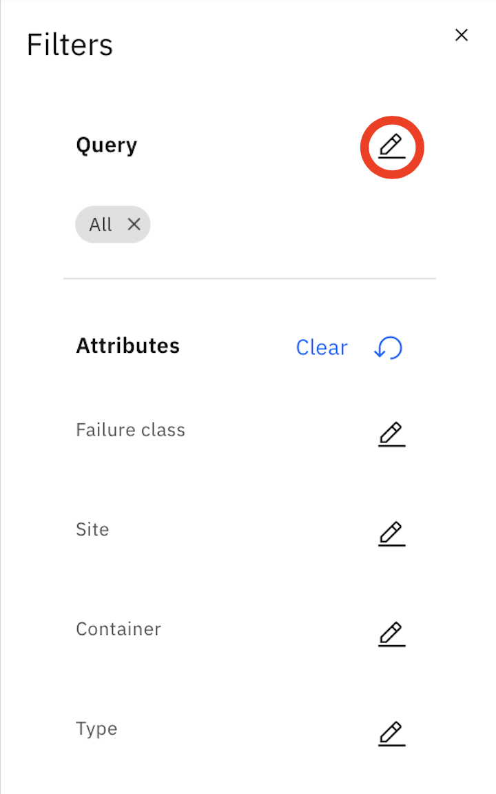 - Select
ST_EUDEMO_Afrom the list - Click
OK
- Click
Apply
- Select the 3rd icon in the upper right of the screen to see the selected assets on a
Chartsview
The Charts view shows 3 charts:
- A health wheel categorizing all of the assets by health.
- Unplanned downtime view showing hours of downtime by month.
- A chart showing failure rate per manufacturer.
You will drill-down through each of these charts to see the assets details of each category.
Value
Seeing key KPIs for multi-assets by health distribution, categorized by unplanned downtime or failure rate per manufacture can help you understand assets failure trends.
Actions
Follow the action items below.
- Click on the manufacturer
Boggsto see the failures by that manufacturer. Clicking on the manufacturer Boggs shows a 100% failure rate. So all assets from Boggs have failed.
- Return to the charts page by using the breadcrumb at the top of the page.

Matrix View
Another view to help you identify the number of assets in different condition ranges is the Matrix view.
Value
Spend your time investigating and actioning assets that exhibit multiple conditions that meet your score range criteria.
Actions
Follow the action items below.
- You will look at all substation transformers. Reset your
ViewtoAll (shared)assets. 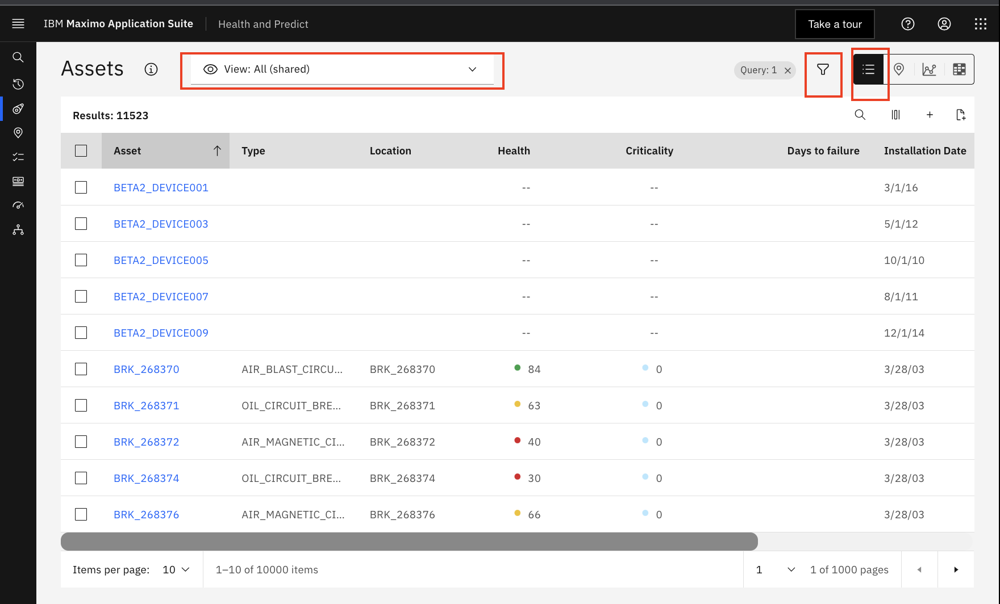 - Click the
filtersymbol - Select the
editsymbol for Query 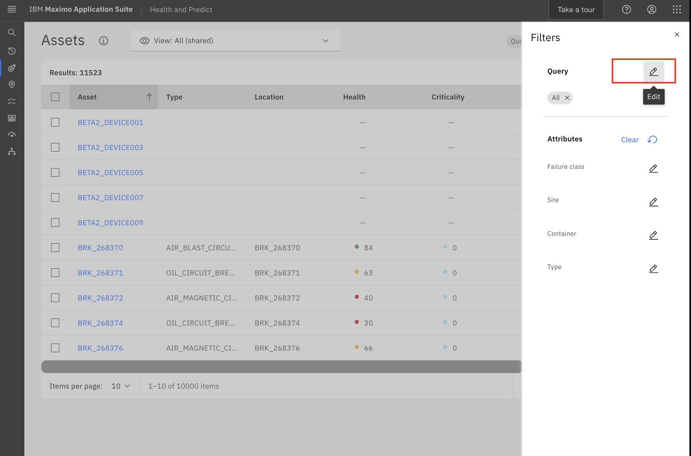 - Input query string
EUORG1_EUDEMO_STand clickEnterSelectEUORG1_EUDEMO_STradio box filter. ClickOKbutton to accept. 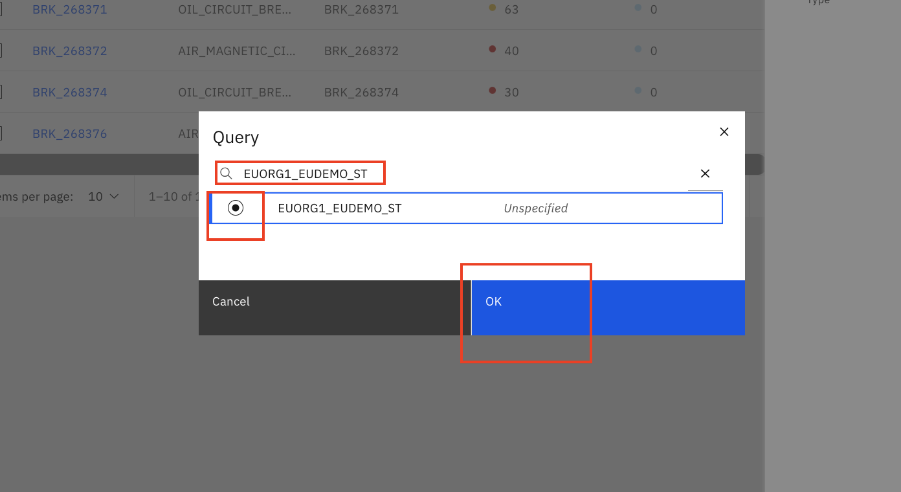 - Click
Applyto save the query. Assets grid now only displays assets that match the query. 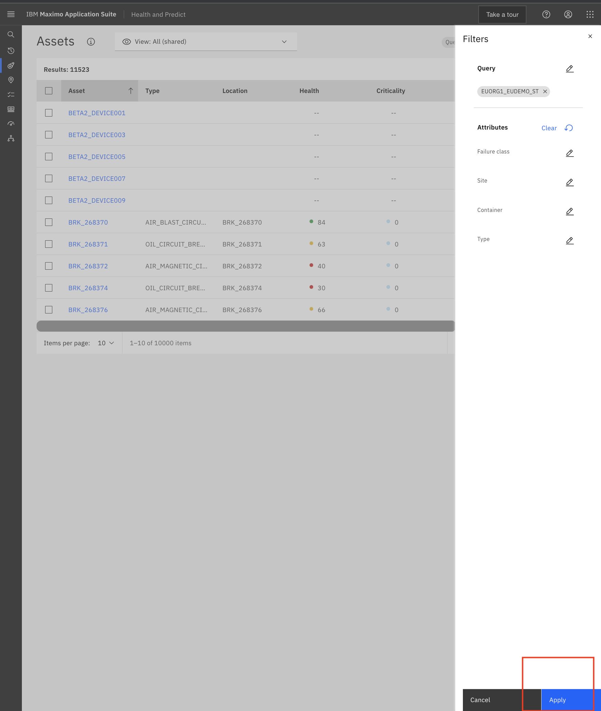 - Select the 4th icon that looks like a Matrix in the upper right of the screen. 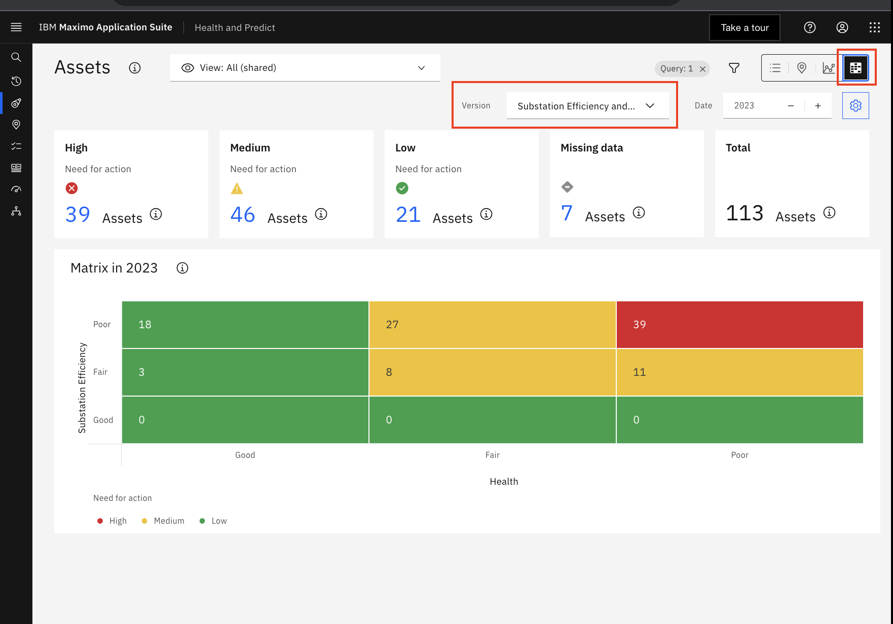
- You can see the number of assets categorized on a Matrix view.
- Set the Matrix Version to
CriticalityandEnd of lifeto see the X and Y axis change and score ranges change to the different score range categories. Note how many assets are forHigh Need For Actionwhich means they need to be actioned. 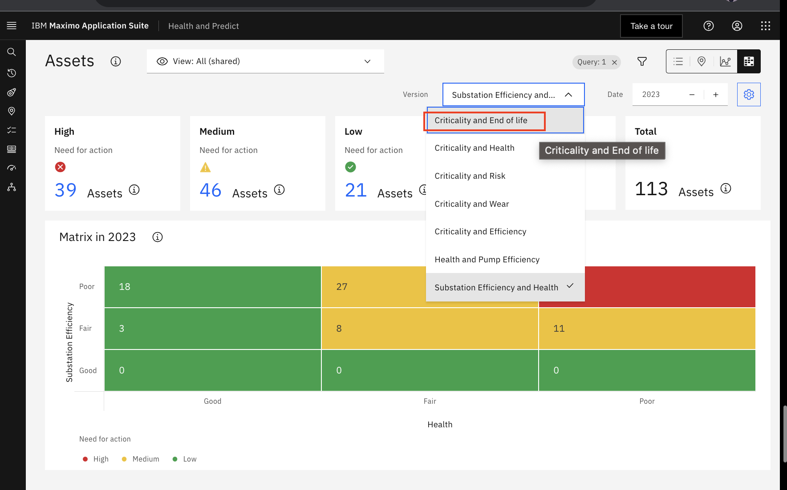 - Click
Assetsbreadcrumb to navigate back to theMatrixview. 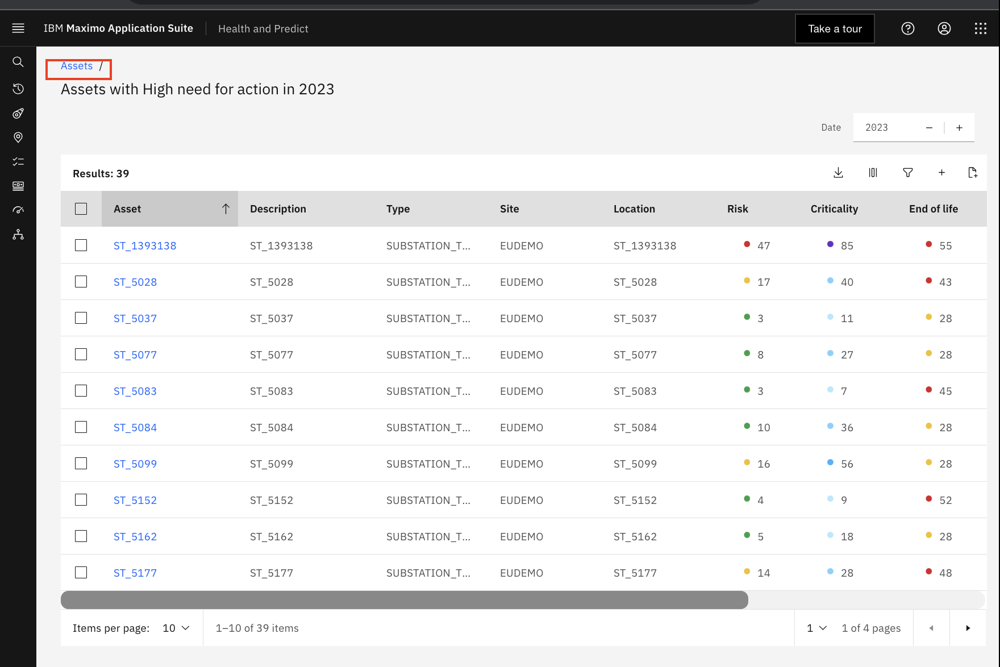 - Set the Matrix Version to
CriticalityandEnd of life.
- You can drill into the red cell with
CriticalityA andEnd of lifeHigh to see what assets are at close to the end of their life. Click the number of assets#. 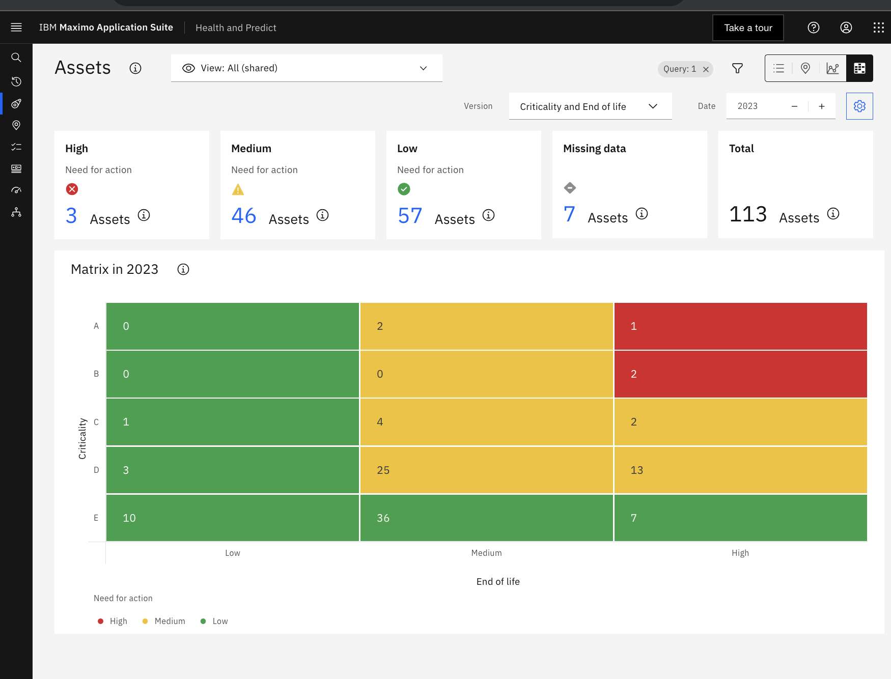 - You can also see the number of asset in the matrix in the future years if you have configured your forecast score notebooks.
Work Queues View
Using Work queues view is another way to identify assets in trouble or need your attention so that you can take an
action to ensure KPIs are able to be calculated and to avoid asset unplanned downtime and be more proactive in maintenance
planning.
There are a number of Work queues included with Health and Predict. Here are some example Work queues
- Predict assets with a
High probability of failure - Identify
Assets in poor health - Identify assets with
Assets missing data
Work queues are preconfigured views designed to help find assets that meet specific conditions. They can be used by the reliability engineer to systematically address each asset on the list, in turn, and “work down” the list.
Value
Allows you to prioritize your work and focus to address a specific problem, like a utility, trying to avoid unplanned downtime.
Actions
Follow the action items below.
- Hover over the left nav bar to expand it
- Select the
Work queuessection on the left nav bar
- Select
Failing Before PMwork queue
Investigate
The Failing before PM work queue shows all of the assets with scores in that work queue. As a reliability engineer at
a Utilities plant, it is critical to avoid failures. Note that for this Work queues, there are several pumps and
substation transformers that have a predicted failure before their next planned maintenance date. Two of the transformers
are in the container that was viewed earlier. You will select ST_1400518 in the queue to start managing your work load
for the day by investigating and addressing all of the assets in the work queue. You will use the Asset Details view to
better understand the holistic asset condition of ST_1400518 so that you can better assess and pick a corrective action.
Value
The missing data Work queues are useful for an reliability engineer to help identify gaps in data necessary to create health scores or predictive failure date models.
Actions
Follow the action items below.
- Select
ST_1400518which opens theasset detailsview. Details on this page will vary since this is a live demonstration environment system.
Assets Detail View
On the top of the Asset Details page there are the resulting scores from the predefined notebook for this substation
transformer. These are health, criticality, risk, end of life and effective age score. Note that effective age is a
calculation using the actual age and the health score. An asset in poor health will have an effective age greater than
its actual age.
On the second line, there are custom scores, like the Substation Efficiency score.

The next Preventive Maintenance date and the MRR come directly from Maximo Manage.
Value
The asset detail page is an useful for investigating assets. Asset condition information is presented on a single page, in easy-to-read tables, charts and graphs.
- On the top of the page, there are details about the asset, and KPIs that give a snapshot of its current state.
- For this asset, there is a
Health Scoreof 44, which is in the mediumfairzone. - This asset also has a high
Criticalityand lowRisk Score. - This asset has a low percentage of
probabilitythat there will be an imminentfailure, based on theInstallation Dateand manufacturers recommended life. - The asset is projected to fail in the next 0 days, but the next maintenance isn't planned for 30 days.
At the beginning of the investigation, you suspected the asset was going to fail before its planned maintenance. But, just by
looking at the KPIs, additional evidence suggests that this asset may be in trouble, and that some action needs to be
taken now. The Health history widget of this asset is below the Score widget. Using the historical health chart, you can see
this assets health has been low for some time. This is another indication that this asset needs attention.
Value
Viewing the contributors and the historical health scores can give insight into the why a particular score is trending in one direction or the other.
Actions
Follow the action items below.
- Scroll down the page to learn more about the health of the asset, go to the
Score detailswidget.
- Understand what is contributing to the poor health of the asset to see how you might address the problems.
- Expand the view to see the contributors by clicking the
chevronsto view the contributors to poor asset health. 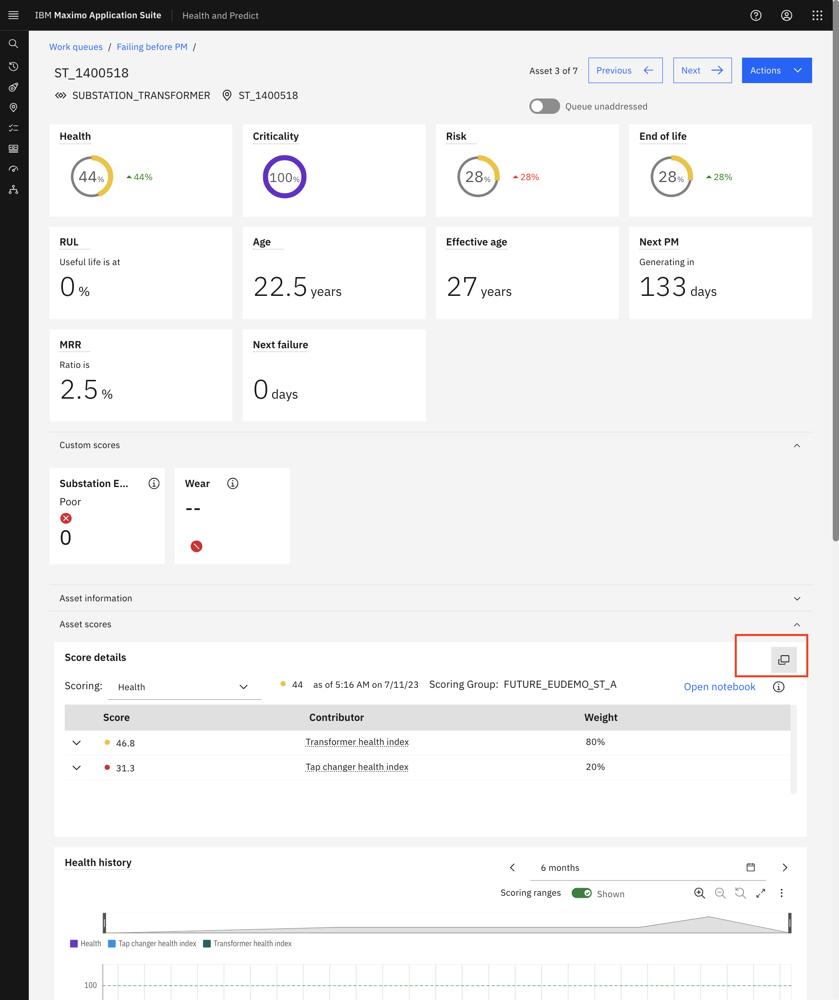 - See and sort on complete list of contributors to help understand what might be the root cause of the problem. Click
Weightto understand what is contributing the most to theScore - From the
Scoringdrop down box you can also see otherCustom scorecontributors that you have created using the custom score template.
The Health application supports asset-specific calculations and visualizations like Dissolved gas analysis for transformers.
There a two types of visualization widgets available to understand the transformers gas conditions using inspection or
sensor data readings.
Value
Understanding gas levels can be a early indicator of underlying asset transformer problems that if not inspected or serviced could result in an unscheduled maintenance or failure.
Actions
Follow the action items below.
- Scroll down the
Asset Detailspage until you reach theDissolved gas analysistile.
- Click on each of the
dotsto get detailed information about the amount of those types of gases. - Click the
switchericon on the top right corner of the tile, to view the results in the table view. - The other widget is the history of combustible gas concentrations. It shows the combustible gas trend and rating over time. The rating represents the average acceptability of detected gas concentrations. The rating is determined by the overall factor.
- Hover on each of the assessment dates to get the detailed asset condition information.
There are several predictive model templates that come with Predict. Your data scientist has trained and deployed these models built using Cloud Pack for Data and Watson Studio which is included with Maximo Application Suite. IBM Predict includes templates to:
- Predict days to failure
- Calculate probability of failure
- Detect anomalies
- Generate an asset life curve based on group asset deployment and decommission dates
These templates include a large number of algorithms and can automatically select the one that best fits the data for the optimal outcome. These models are built to detect specific problems for each asset problem and failure mode. They can detect problems and forecast the future condition of the asset using historical asset sensor data ingested by Maximo Asset Monitor or streamed into Health using the App Connect included with Maximo Application Suite.
Value
Understanding what potential problems may occur in the future allows you to schedule asset maintenance or replacement without impacting customer service or production.
Actions
Follow the action items below.
- Scroll down
Asset Detailspage until you reach thePredictionstile. - Double click the " the
Predictionstile tile to expand the tile and see the prediction cards.
Note that also included with MAS is Watson Studio and Watson Machine Learning, both of which a Data Scientist can use for building, training, and maintaining predictive models. In the case of this asset, the model tells us that it is projected to fail in 0 days plus or minus 1 day.
A Data Scientist can build predictive models for specific failure modes using the templates included with Predict if you have failure history data.
The reliability engineer can select those failure modes within the card to see the projection for each failure modes.
The failure training data is used to help calculate Failure probability. Different failure modes can be calculated and do impact predictions.
Failure probability is the chance that an asset may have a failure with a certain time period. For this asset there is a 20% probability of failure in the next 2 months due to overheating.
A Data Scientist must build specific models for time periods just like the failure modes. You can see the prediction results by making different selections within the card.
Failure probability history shows how the probability of failure for each mode and how it has changed over time.
The Factors that contribute to failure show which factors from the training data impacted failures the most, giving an indication of what may lead to future failures.
The anomaly detection model creates a threshold based on history and shows when the asset exceeds that threshold in the card.
The End of life curve is built based on training data for assets that have been decommissioned. By applying the effective age calculation from the notebook, this curve can be used to estimate probability of an end of life failure.
The Effective age of the transformer is 27 years. The curve produces an end of life probability of 89%. This is one more indication that this asset needs to be attended to immediately.
Value
Understanding this asset Effective age and End of life curve relative to all the assets, allows you to understand it's likely remaining life given given it's operation and conditional history rather instead of it's calender based age.
Actions
Follow the action items below.
- Hover near the point where the
Effective agecrosses the curve. - How is this asset performing relative to others of a similar class and where it should be for it's age?
The Asset timeline card shows several pieces of key information about the asset in the same graph. For example, the timeline shows a predicted failure (on the top line of the graph), that will occur before the next preventive maintenance (on the second line of the graph).

Value
Information on the Asset timeline chart, like past work orders and inspection, provide valuable insight into the asset's history, and may help you better formulate what kind of action to take.
Actions
Follow the action items below.
- Scroll down the page
- Hover over a point on the timeline
There are several other sections on this page including:
Operational status, showing recent meter readings, maintenance history, showing work orders for this asset.Replacement planning, showing any replacement or refurbishment plans created for this particular asset.
Value
While each piece of information, or card, gives nsight into the state of our asset, all of the information together, gives a richer view, and helps make a data-driven decision on how to address this asset.


Take Action
There’s enough evidence from the investigation to take some action against this asset. Scroll to the top of the page and click the Actions dropdown selection box button to see the options.
Actions
Follow the action items below.
Value
Corrective actions to address asset problems can be done with a couple of clicks directly from the asset detail page.
- Scroll to the top of the page.
- Click the
Actionsbutton.
You could:
Add flagwhich sets a replacement flag on this asset to make sure it is marked to be replaced in the next round of replacement planning.Create a planto replace or repair this asset.Recalculate scoresif there is new information or your scoring notebook has changed, you can request that the scores be re-calculated to reflect these changes.Edit source asset recordto navigate to the asset record to make asset changes. In this case, possibly adjust the preventative maintenance schedule.Create a service requestso that a technician can do asset repairs, inspection or replacement.
However, this asset needs urgent maintenance. Create an emergency maintenance work order for this asset by selecting the Create work order option and completing the form.
Actions
Follow the action items below.
- Select the
Create work orderoption - Show the form
- Click
Cancelto return to the asset detail page
Health and Predict gives many options to identify assets at risk with a table, map, chart and asset details views.
Additionally you can use and predefined Work Queues to help systematically address risky assets exhibiting the same
problems or that are missing data in order to calculate their scores.
There’s a single page from which to conduct an investigation and take an action. In this case, submitting an emergency work order to prevent the imminent failure of a substation transformer.
In Health and Predict – Utilities, there’s also the ability to use a matrix (custom or OOTB) and do long-term replacement planning based on risk tolerance and available budget.
Identify / Investigate with a Matrix
Start building an investment project from the matrix view.
Actions
Follow the action items below.
- Hover over the left nav bar to expand it
- Select the
Assetssection on the left nav bar
- Make sure the asset view is for
substation transformersby either using the filter symbol or a saved view. If necessary, clear the filters to start from the full set of assets under management - Click the “Matrix” icon to move to the matrix view

The default matrix view, in this case, is set to “Substation Efficiency and Health”. This is a custom matrix. The out-of-the-box matrices are… - Criticality and End of life - Criticality and Health - Criticality and Risk
This custom matrix is using the Health score generated by using the notebook for substation transformers. The Substation Efficiency score is a custom score. Together, on the matrix, they can represent a proxy for sustainability.
Value
Seeing how the assets are distributed by color, and against two variables, provides an easy way to identify assets at risk.
To get a different view of the assets, change the axes of the matrix by using the pull-down menu.
The color pattern can also be adjusted by clicking on the setting cog. By doing this, we are adjusting our risk tolerance.
Value
The ability to change the matrix, further allows you to focus on specific assets.
Actions
Follow the action items below.
- Click on the pull-down menu to show the other matrix options

- Click on the setting cog to briefly go into the setting page to show that the page is customizable

- Click
Closeto return to the matrix view
This view shows that there are 35 assets in red or high category. Click through the summary boxes, or the boxes in the matrix, to see the details of the assets in a table view.
This table view provides a perfect example of how assets can be added to a new or existing investment project.
Value
The ability to drill-down allows you to focus on those asset in trouble, and take action on only those assets.
Actions
Follow the action items below.
- Click on the "High" box with 35 assets in it

- From the table view, demonstrate how all of the assets can be selected by clicking on the selection box at the top

- Show the options to add the assets to a new or existing investment project
- Click
Cancel
- Click the
Assetsbreadcrumb to return to the matrix
Take Action with AIO
In Health and Predict – Utilities, there’s a capability to build an Asset Investment Optimizer (AIO) project.
The AIO process starts with building a project of assets, assigning a length and starting date to the project, then running multiple strategies to determine which assets should be replaced over the life of the project, and when.
Value
Utilizing advanced data-driven analytics to optimize OPEX and CAPEX comprehensively from various dimensions.
In this case, a project has already been built with the 35 assets in the “red” cell, and the 26 assets in the “yellow” cell next to it.

Actions
Follow the action items below.
- Hover over the left nav bar to expand it
- Select the
Asset investment optimizersection on the left nav bar
- From the
Projectstab, click onST Investment Project
There are 3 strategies built out in the “ST Investment Project”.
The first strategy is to maintain the average risk of 8.2 for the 61 substation transformers in the 25-year project.
The second is to reduce the risk to 7.0.
The third is to stay within a $2.16M budget.
Each of the scenarios uses a plan template build for Substation Transformers specific replacement costs and cost of a failure.
Value
Multiple scenario can be run to determine the best strategy to meet the risk tolerance of the enterprise, and the budget available for the project.
Actions
Follow the action items below.
- Click the
Maintain riskscenario
- Review the scenario by using the 2 “details” buttons to toggle between the cost of the scenario, and the specific replacement plan
- Repeat the process for “Stay within budget” and “Reduce risk” scenarios to review each scenario

Up to three strategies can be compared side-by-side and the details can be exported.
Actions
Follow the action items below.
- Click the
Compare strategiesbutton
- From the pop-up, click all three scenarios
- Click
Compare
- Review the output noting the results of each strategy

Summary
As the Reliability Engineer, maintaining the grid, I was able to use IBM Maximo Health and Predict to identify assets at risk, investigate those assets, and finally take an action to prevent a failure and unplanned downtown…saving thousands of dollars, and maintaining the integrity of the grid.
My actions will also help short, medium and long term investment decisions that drive maintenance and replacement policies.